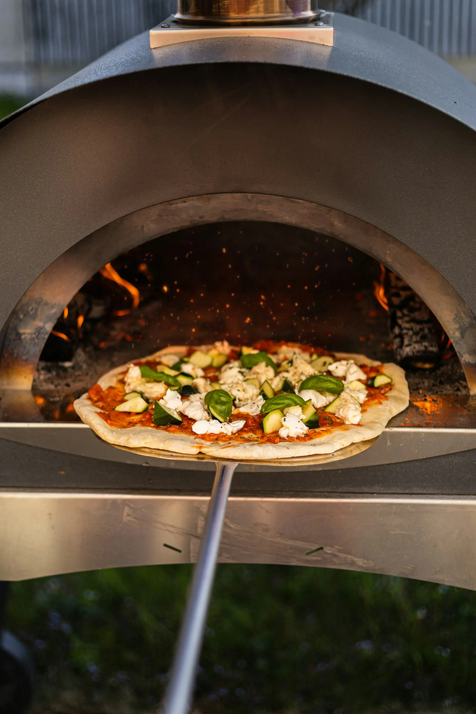
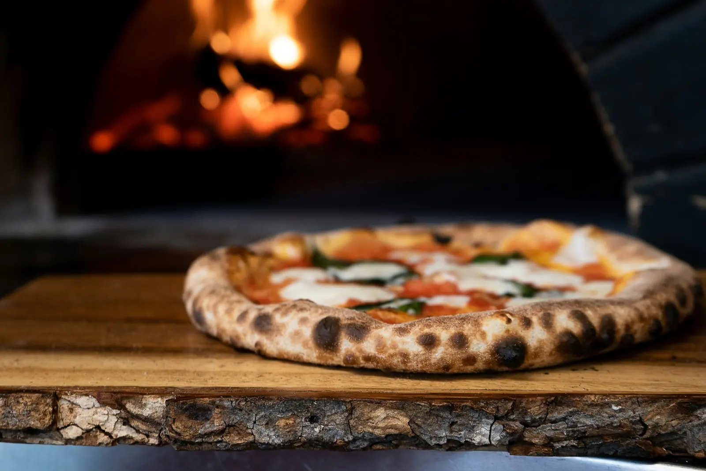
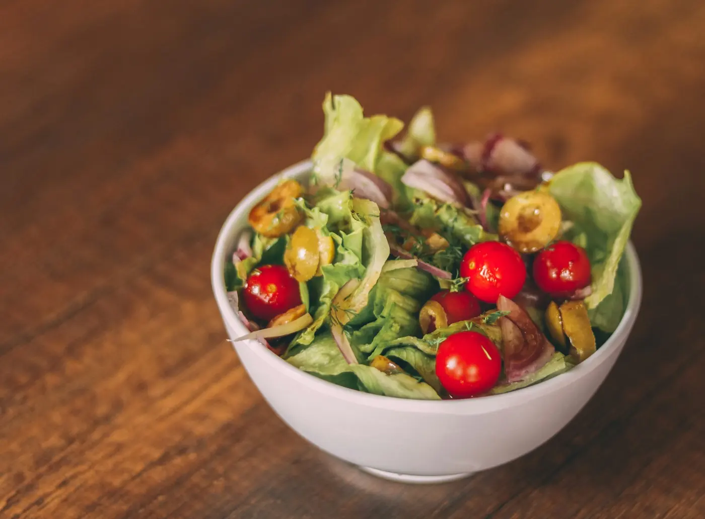

The Space
Warm, Rustic, Made for Lingering
A handcrafted interior built for families, date nights and long tables of friends.



Hand-stretched Neapolitan pizza and boat-shaped Turkish pide, baked to order in our brick oven rustic, handcrafted, and made for sharing.
"Toppino's is a Turkish–Italian brick-oven café where a Neapolitan pizza dough meets a Turkish pide, and every plate is made to feel like home."
A sample of what's baking pizze and pide, made fresh to order.

Our brick oven sits at the heart of the café dough stretched by hand, topped simply, and fired at high heat until the crust blisters. No shortcuts, no frozen bases just the same live-fire process you can watch from your table.
Our Process
Alongside our wood-fired menu, we're building a small selection of fresh salads for a lighter option earlier in the day. Final timing and offerings are still being finalized.
See MenuA handcrafted interior built for families, date nights and long tables of friends.
Toppino's is a brand-new relaunch in Thaltej if you've visited us, we'd love for you to be one of our very first Google reviews.
Leave a Google Review